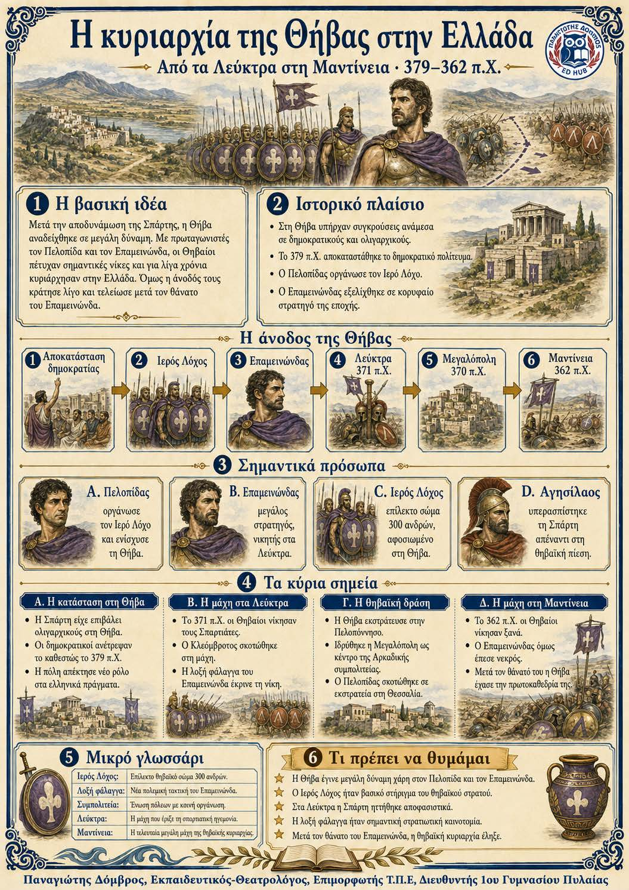

Πληροφοριογράφημα ενότητας
Το πληροφοριογράφημα αυτής της ενότητας δεν έχει ανέβει ακόμη. Οι σημειώσεις παραμένουν πλήρως διαθέσιμες.

Κεφάλαιο ΣΤ΄ · Θήβα και ελληνικός κόσμος, 382–362 π.Χ.
Η Θήβα έγινε ισχυρή χάρη στον Πελοπίδα και τον Επαμεινώνδα. Οι δύο ηγέτες αποκατέστησαν τη δημοκρατία, οργάνωσαν αξιόμαχο στρατό και νίκησαν τους Σπαρτιάτες στα Λεύκτρα. Η θηβαϊκή κυριαρχία όμως κράτησε λίγο. Μετά τον θάνατο του Πελοπίδα και κυρίως του Επαμεινώνδα στη Μαντίνεια, η Θήβα έχασε τον πρωτεύοντα ρόλο της και στην Ελλάδα επικράτησε πολιτική αστάθεια.
382 π.Χ. · Σπαρτιατική επέμβαση και ολιγαρχικό καθεστώς ↓ 379 π.Χ. · Αποκατάσταση της δημοκρατίας από τον Πελοπίδα ↓ 371 π.Χ. · Νίκη των Θηβαίων στα Λεύκτρα ↓ 370 π.Χ. · Ίδρυση της Μεγαλόπολης ↓ 362 π.Χ. · Νίκη στη Μαντίνεια και θάνατος του Επαμεινώνδα
